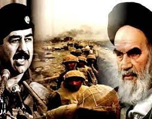
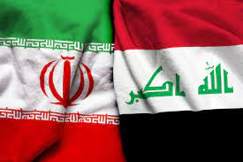
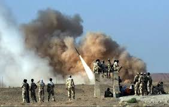
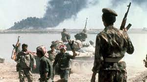

Iraque ocorreu entre os anos 1980 e durou até o ano 1988 e foi um conflito entre as potências beligerantes (ou seja, potências que estão em guerra) do Oriente Médio, o Irã contra o Iraque. Guerra essa de muito impacto histórico na sociedade, sendo comparada com grandes conflitos do século XX, como a Primeira Guerra Mundial, pelo número de contingentes, número de militares, pelo recurso financeiro utilizado, etc. Logo, foi um conflito imenso e trouxe consequências catastróficas não só para os países envolvidos, mas sim para o mundo todo até hoje.
Irã e Iraque mantinham rivalidade histórica, desde a antiguidade (por ocupação territorial, principalmente), com os iranianos tendo origem Persa e os iraquianos tendo origem Árabe. Porém, essas tensões se elevaram após a Revolução Islâmica de 1979 no Irã, quando o o líder supremo de orientação Xiita, Aiatolá Khomeini, passou a representar uma ameaça local aos planos de Saddam Hussein, que tinha orientação Sunita, e que também havia iniciado o seu mandato como presidente naquele ano.
Saddam Hussein temia que em seu país ocorresse uma Revolução Xiita, aos moldes da Revolução Islâmica que havia ocorrido no Irã, pois Aiatolá Khomeini apresentava em acabar com as monarquias no Oriente Médio. Porém, o conflito também teve motivações territoriais e econômicos, pois o Iraque reivindicavao domínio de Xatalárabe (Chatt AI - Arab), um rio que representa a única saída iraquiana para o Golfo-Pérsico, e consequentemente o domínio de navios petroleiros na região
Logo, foram causas:
- Política - Religiosa: Sunitas e Xiitas
- Territoriais e Econômicas: Reivindicação do rio Xatalárabe, devido ao domínio de navios petroleiros
O conflito se iniciou no dia 22 de setembro de 1980, com a invasão aérea iraquiana no Irã, porém, não houve uma declaração formal de guerra, além de também executar uma ofensiva aérea ao Iraque. O Irã utilizava da Brasij ( Força de Resistência), uma milícia paramilitar ligada ao Aiatolá Khomeini para surpreender os iraquianos. A população iraniana era três vezes maior do que a iraquiana, porém, o país não dispunha de melhor material bélico, assim, os voluntários da Brasij promoviam ataques de II Ondas Humanas de Ataque II como estratégia de guerra
Os EUA, através do presidente Ronald Reagan, temendo a influência do Irã e as motivações do Aiatolá Khomeini de derrubar as monarquias do Oriente Médio, passou a apoiar o Iraque de forma financeira e militar, cedendo ao país os seus satélites para o monitoramento das forças iranianas. O presidente Reagan também se aliou diplomaticamente ao Saddam Hussein, removendo o Iraque da lista dos" países territoriais".
